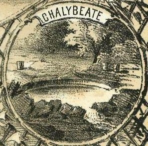
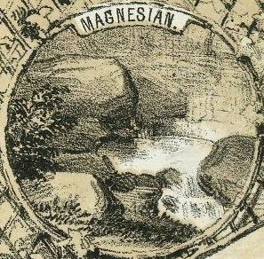

For roughly thirty years in the mid-nineteenth century, a therapeutic sulphur spa thrived in the idyllic Scioto River Valley of Delaware County. An 1880 history of the county describes the discovery of the underground spring of sulphurous water "in early times" by Davis and Richards, two men who were boring into the earth for salt. They sunk their well 460 feet and struck water, which gushed forth continuously from the hole they'd dug. This ruined their salt mining efforts, so they left the area.
It wasn't until about 1842 when Nathaniel Hart came along and saw the potential to make money from the sulphurous pit. He bought the land from the owner (whose name, ironically enough, was Christopher Freshwater) and built one large building and several smaller cottages to accommodate guests. The spring itself, which poured forth at a constant 52 degrees Fahrenheit, was housed in a bathhouse with a marble reservoir. The surrounding land was cultivated and advertised as almost as therapeutic as the waters themselves--blessed, according to the 1858 brochure, "with an atmosphere free from malarious influences, at every season of the year--and as salubrious as is found in our high mountain ranges."
The White Sulphur Spring was as much a vacation resort as it was a convalescent home; healthy people, or those with minor complaints, often spent leisure time on the scenic banks of the Scioto River or soaking in a bathhouse that must have really smelled like rotten eggs. There was a stable and riding paths; a lake equipped with rowboats; and a park dotted with gazebos. During this time one of the guests entertained at the Spring was a young Rutherford B. Hayes, who in 1846 met a girl named Lucy Ware Webb there. He described her in a letter to his mother: "A bright sunny hearted little girl, not quite old enough to fall in love with--and so I didn't." But he did, and six years later they were married. During her husband's term, from 1877 to 1881, Lucy Hayes was known as "Lemonade Lucy" because she refused to serve alcoholic beverages at White House functions.
Rutherford B. and Lucy Webb Hayes
in their wedding portrait
There was more than just sulphur water available at the Spring to cure your medical problem. Under Andrew Wilson, Jr., the second owner of the spring, the resort included baths of Magnesia, Chalybeate, Saline Chalybeate, and, of course, White Sulphur.


The brochure these images are taken from was printed in 1858, in preparation for the 1859 season at White Sulphur Springs. By this time an entire town had formed around the natural spring; the White Sulphur Post Office opened at White Sulphur Station (a separate town five miles away which also served as the train station for the resort) in 1858 and remained in operation until 1918. To read the brochure, which is supposedly written by two doctors and is full of confusing snake oil gobbledegook, click the image below and you'll be taken to a list of pages--71 in all--which were taken from the excellent Ohio history website OhioMemory.org. [Sometimes Down.]
1858 White Sulphur Springs Brochure
John Ferry bought the property from Wilson in 1865 and poured money into construction on the site before closing the spa down for good in 1869. He sold the land to the state, and it entered the next phase of its existence: the State Reform School for Girls. In 1872 the name was changed to the Girls' Industrial Home (Click here to read about the Boys' Industrial Home, in Lancaster) but the purpose was the same: a home for "wayward" girls.
The Girls' Industrial Home gave Home Road its name. In 1877 the Stanberry Bridge was put up to serve the Home; it was demolished in 2001. At some point the surrounding town was referred to as Scioto Village, though mentions of this are fairly rare. Early on it was known as Ira Fountain or Hart's Springs.
Today White Sulphur Springs is marked by a newer correctional institution, a park, and a Concord Township Fire Station. Its location can be described as being southeast of the intersection of State Route 745 and Home Road, about 500 feet from the Scioto River near the former Stanberry Bridge site. If the sulphur spring is still giving water, no one seems very interested in getting it. The long and varied history of this spot make it one of Ohio's most interesting ghost towns.
Back